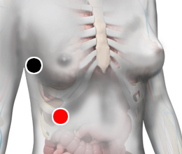

Orthohepadnavirus
Par
pleura (D) - hígado

Generalidades:
HEPATITIS B. Única hepatitis viral. Fatiga. Gastritis. Combinado con hiperuricemia es el principal causante de la Gota o Artritis gotosa. Intolerancia a algunos productos (alcohol). Produce Sarcoma de Kaposi (tumor maligno del endotelio linfático) al convinarse con VIH. Cambiar el cepillo dental y checar a toda la familia.
Es un virus perteneciente a la familia HEPADNAVIRIDAE, de tamaño muy pequeño, del órden de 42 nm de diámetro, de forma isocahédrica. Se replica mediante el método de transcripción inversa.
Transmisión
Se puede transmitir a través de cualquier fuido corporal, incluyendo la saliva. Pero principalmente a través del contacto sexual y la sangre, por lo que se deben tomar las siguientes medidas:
La mujer infectada puede contagiar a su bebé en el momento del parto o a través de la leche materna.